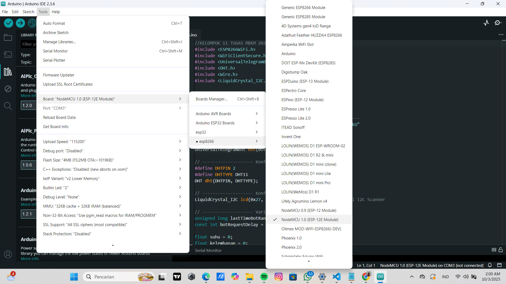
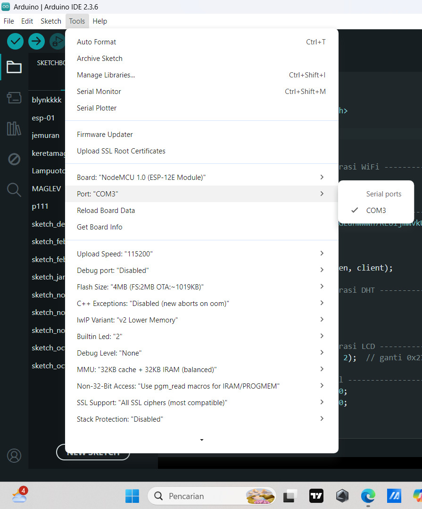
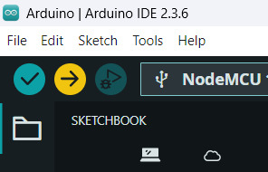
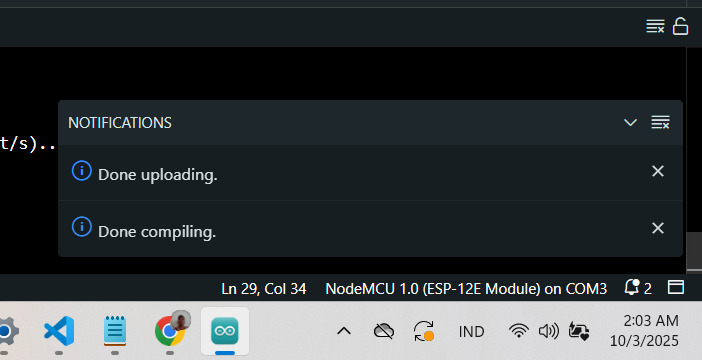
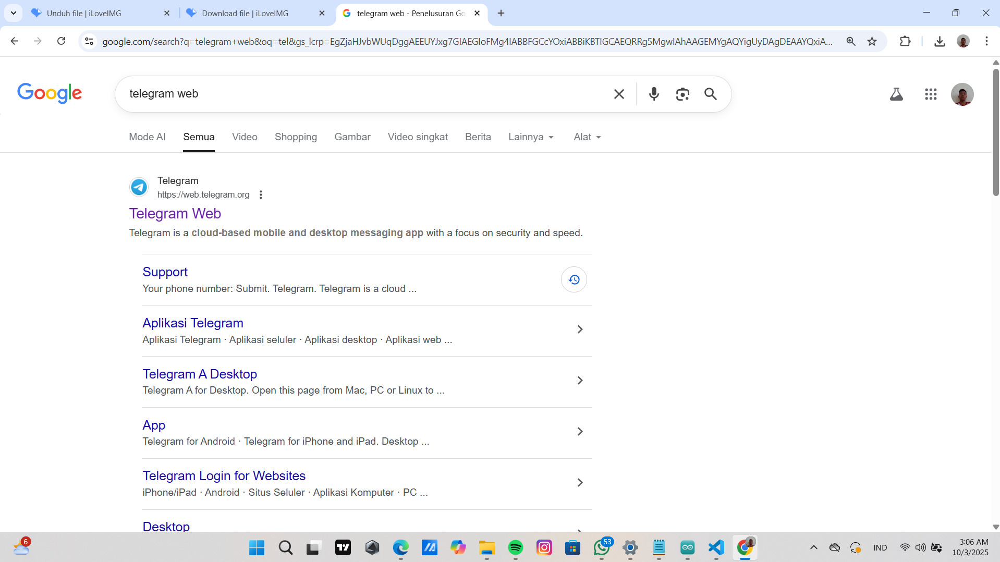
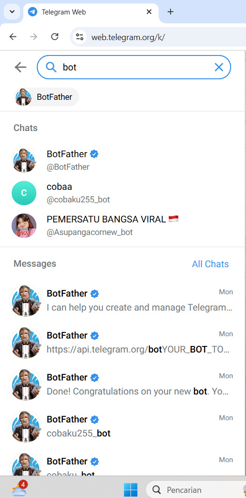
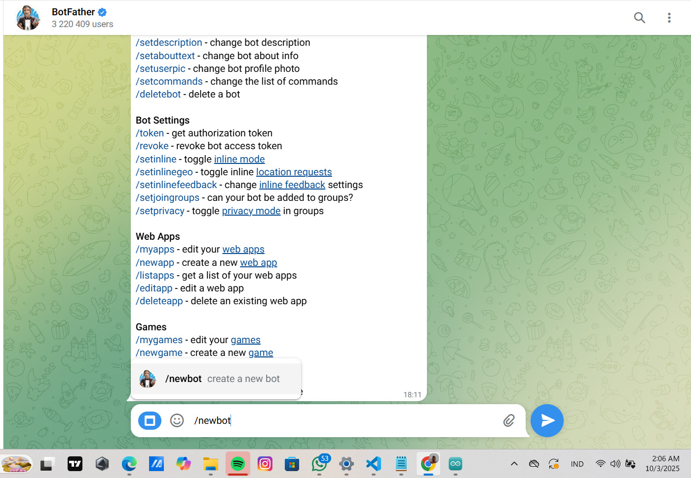
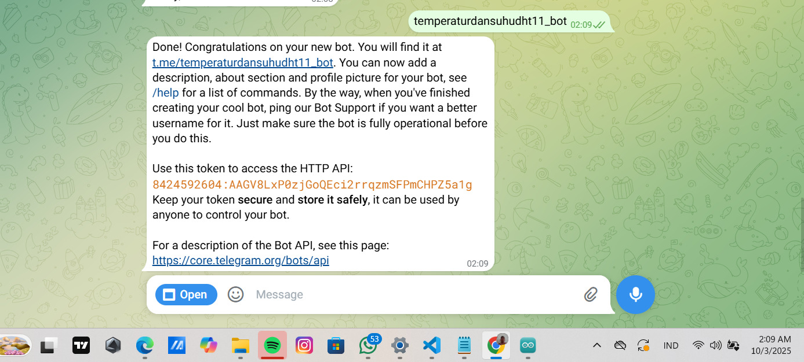
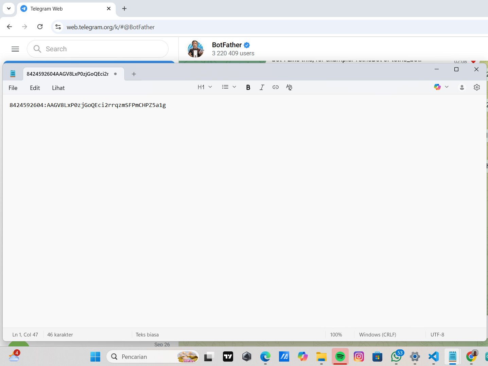

Penjelasan Software & Monitoring

Project ini bekerja dengan cara sensor DHT11 membaca suhu dan kelembapan udara, lalu data tersebut diproses oleh ESP-12E. Karena ESP-12E memiliki koneksi WiFi, data bisa dikirim dan diakses melalui Telegram Bot.
Pengguna cukup membuka Telegram di HP atau komputer, lalu mengetik perintah (misalnya /suhu). Bot akan merespons dengan mengirimkan data suhu dan kelembapan secara real-time, sehingga kondisi lingkungan bisa dipantau dari mana saja selama ada internet.
Konsep IoT yang dipakai di sini adalah menghubungkan perangkat fisik (sensor + mikrokontroler) ke internet sehingga data bisa diakses dan dikontrol jarak jauh melalui aplikasi yang familiar bagi pengguna, yaitu Telegram.
Cara Upload Program Melalui Aplikasi Arduino IDE
1. Hubungkan ESP-12E ke laptop dengan kabel USB.

2. Pilih Tools → Board → NodeMCU 1.0 (ESP-12E Module).

3. Pilih Tools → Port → COM sesuai port perangkatmu.

4. Klik tombol Upload (→) di Arduino IDE.

5. Tunggu hingga muncul tulisan "Done Uploading".
Cara Membuat Bot Telegram

1. Buka aplikasi Telegram.

2. Cari akun @BotFather.

3. Ketik /newbot → ikuti instruksi → beri nama bot.

4. Setelah selesai, BotFather akan memberi API Token → simpan token ini.

5. Dapatkan chat_id. Cari bot @userinfobot di Telegram → kirim /start → akan muncul chat_id kamu.